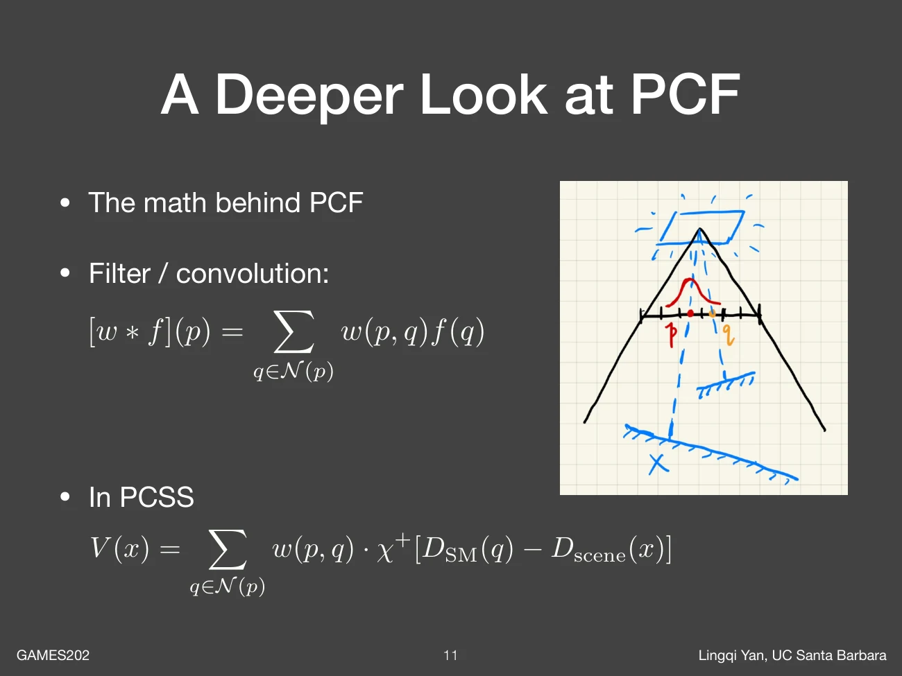
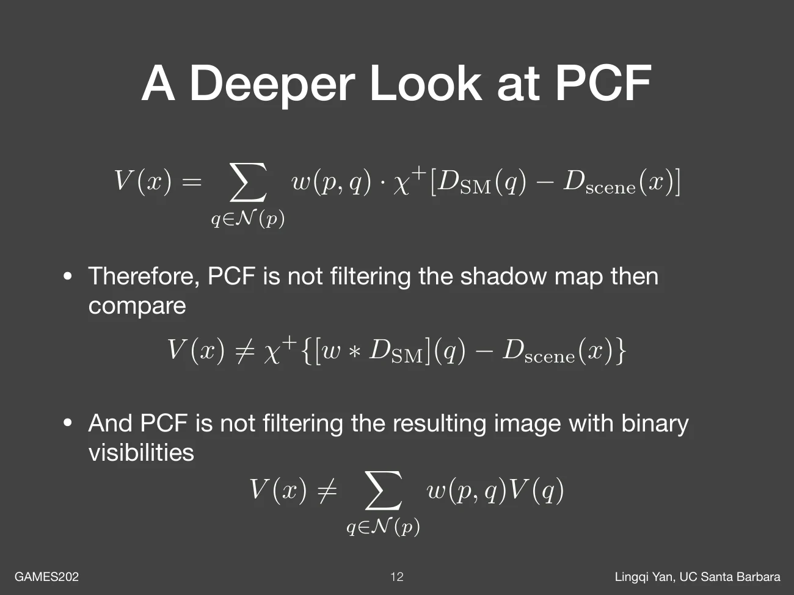
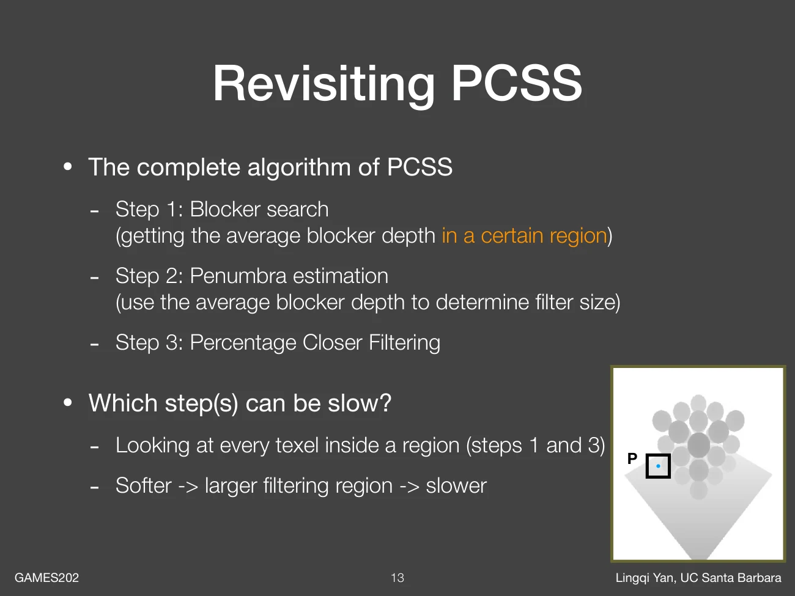
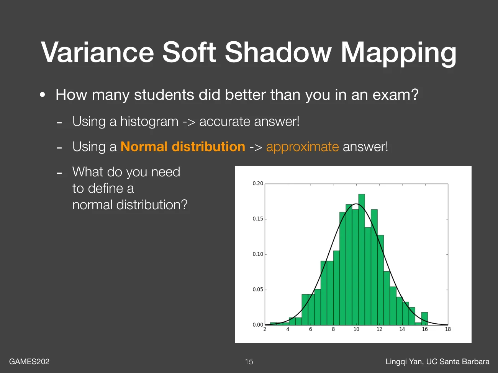
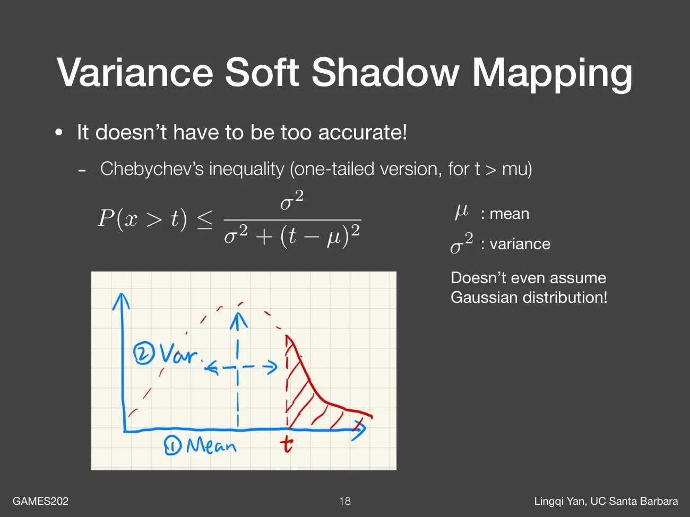
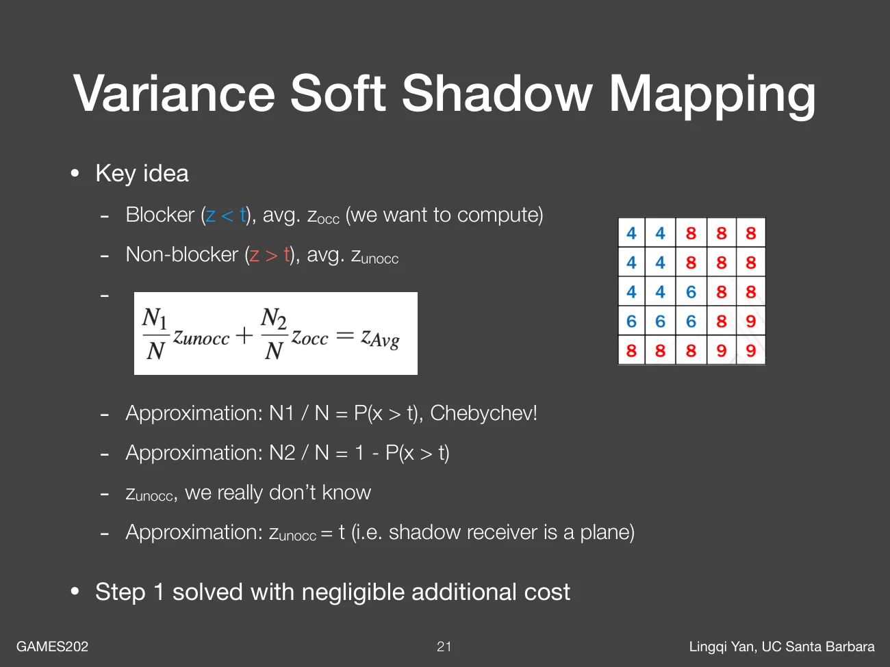
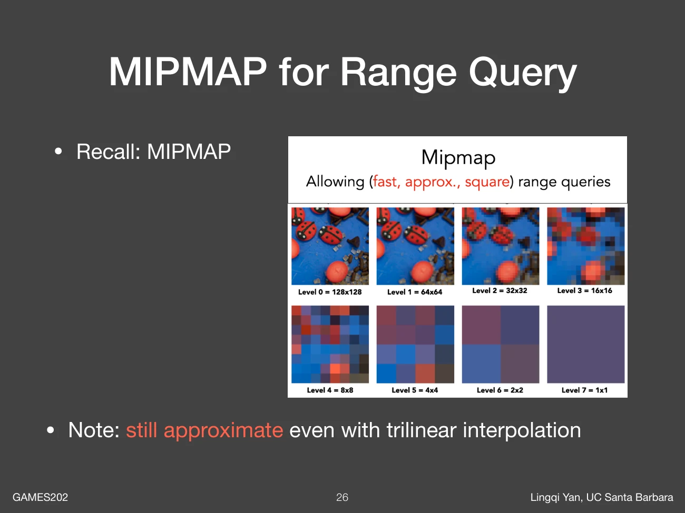
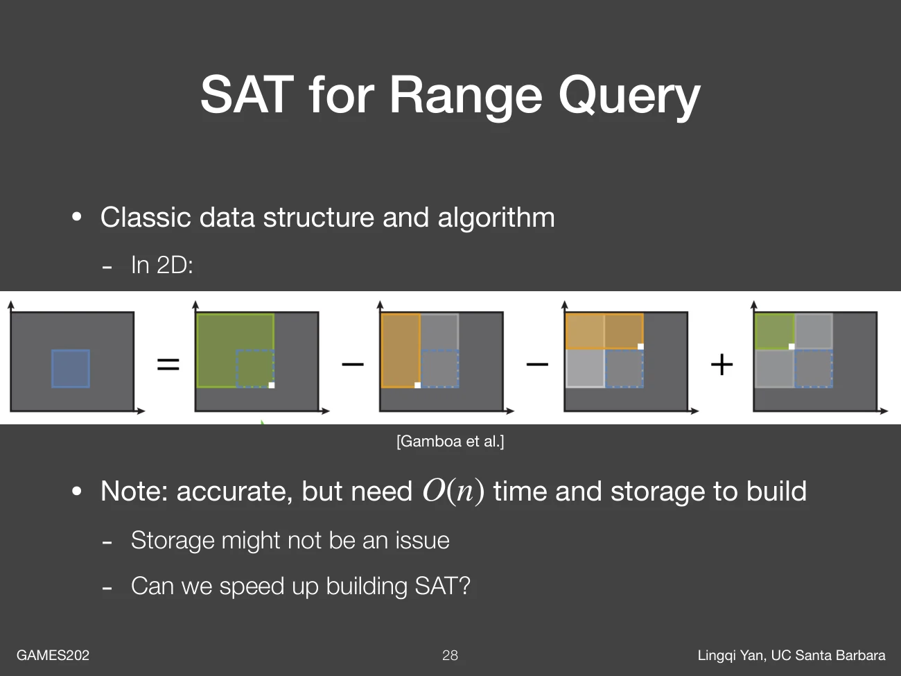
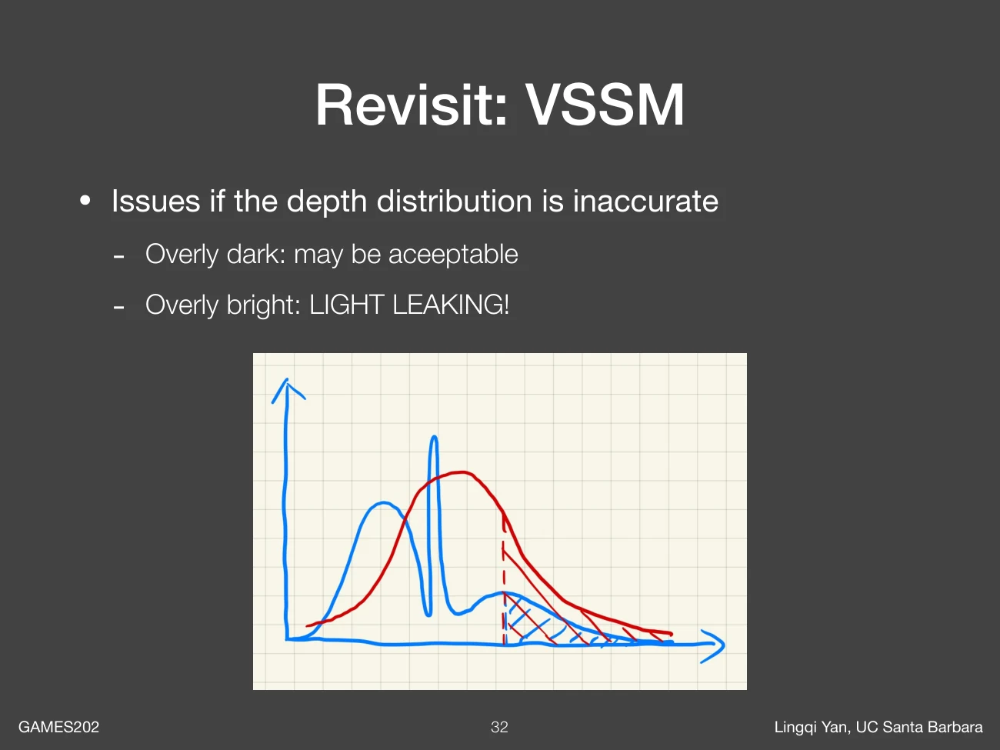
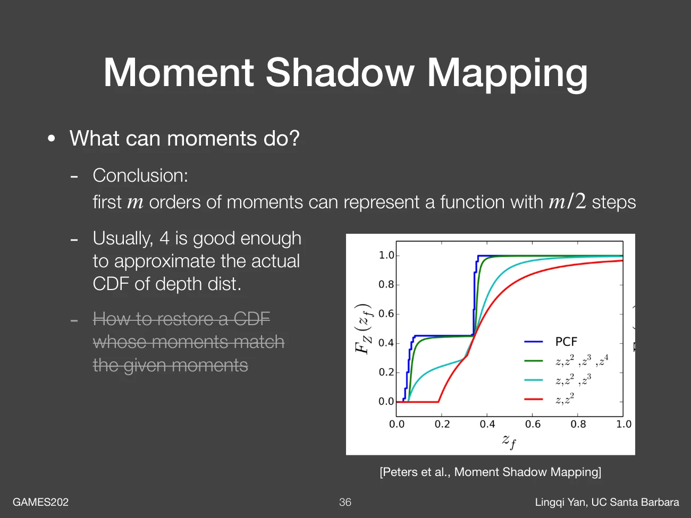

第 4 讲：实时阴影（二）——从 PCSS 到方差软阴影与矩阴影
在 PCSS 基础上，用统计矩和范围查询把软阴影的 blocker 搜索与滤波从逐样本循环变成 O(1) 的解析计算。
◆ 学完这一讲，你应该能
能说清 PCF 不是先滤波 shadow map 再比较，也不是对二值可见性做滤波
能写出 PCSS 的三步算法并指出哪两步最慢、为什么
能用正态分布近似深度分布，并用切比雪夫不等式快速估计“比着色点更近的纹素比例”
能解释 VSSM 如何用 MIPMAP/SAT 做矩形范围查询，以及它为什么会产生漏光
能说明矩阴影（MSM）用高阶矩重建 CDF 的思路、代价与相对 VSSM 的改进
核心结论速记
PCF 的数学本质是：对每个着色点，在 shadow map 的邻域内做加权平均，但权重作用在“比较结果”上，而不是先滤波深度再比较。
PCSS 三步：blocker 搜索 → 半影估计 → PCF；前两步都要遍历邻域纹素，半影越大越慢。
VSSM 的核心：用深度的一阶矩（均值）和二阶矩（平方均值）近似深度分布，再用切比雪夫不等式 O(1) 估计 P(x>t)。
均值和平方均值都可以用 MIPMAP 或 SAT 在任意矩形范围内快速查询，从而把 PCF 滤波变成 O(1)。
blocker 平均深度也可用切比雪夫比例和“未遮挡深度≈t”的近似在 O(1) 内算出。
VSSM 的漏光来自切比雪夫不等式在 t ≤ 均值时失效，以及深度分布非高斯/非平面时近似不准。
MSM 用前 4 阶矩重建 CDF，能表示多台阶分布，减少漏光，但存储与重建开销更大。
011. PCF 到底在滤什么：先比较再平均，而不是先平均再比较
上一讲我们用 PCF 把硬阴影“软化”，这一讲先把它的数学本质讲透。PCF 的可见性公式可以写成：
\[ V(x)=\sum_{q\in N(p)} w(p,q)\,\chi^{+}\big[D_{SM}(q)-D_{scene}(x)\big] \]
其中 \(w(p,q)\) 是滤波核权重，\(\chi^{+}\) 是阶跃函数（括号内 ≥0 取 1，否则取 0），\(D_{SM}(q)\) 是 shadow map 在邻域纹素 \(q\) 处记录的深度，\(D_{scene}(x)\) 是着色点 \(x\) 的深度。
这个式子告诉我们两件容易搞错的事：
- PCF 不是“先对 shadow map 做滤波，再拿滤波后的深度去比较”。如果那样做，公式会变成 \(V(x)=\chi^{+}\{[w*D_{SM}](q)-D_{scene}(x)\}\)，也就是先把邻域深度平均成一个值再比较，这会把遮挡物边界抹成一条错误的等深线，阴影边缘完全不对。
- PCF 也不是“先算出二值可见性，再对结果图像做滤波”。那样会变成 \(V(x)=\sum_q w(p,q)V(q)\)，相当于对已经硬化的阴影图做模糊，边缘会糊成灰边但不会真正变软。
正确的顺序是：对每个邻域纹素先做深度比较得到 0/1，再用权重把这些 0/1 平均起来。这就是“百分比渐近过滤（Percentage Closer Filtering）”名字的由来——平均的是“更近的百分比”。
直觉上，PCF 像是在问：“在我这个着色点周围的一小片 shadow map 区域里，有多大比例的纹素认为我在阴影里？”这个比例就是可见性。
工程上，PCF 核的大小决定了半影宽度，但固定核只能得到固定软度；要物理正确的软阴影，需要让核大小随遮挡距离变化，这就是 PCSS 要解决的问题。


常见坑
把 PCF 写成先对 shadow map 做 blur 再比较 → 阴影边缘出现错误的“等深线”状硬边 → 检查 shader 里比较和加权平均的先后顺序。
对已经二值化的阴影结果做高斯模糊 → 边缘只是变灰变糊，半影不随遮挡距离变化 → 改为在 shadow map 邻域内逐纹素比较后加权。
滤波核半径用固定像素值 → 软硬度不随光源大小/遮挡距离变化 → 需要 PCSS 的动态核。
UE / Unity 落地
UE 的 Shadow Filtering 方法里，PCF 对应的是在 shadow map 比较阶段做多次 taps；材质里不要试图用普通纹理模糊节点去“软化”阴影。
Unity 的 Shadow Quality 设置中 PCF 是内置的 shadow compare sampler，自定义 PCF 通常在片元着色器里手动采样 shadow map 并逐次比较。
PCF 的正确顺序：先比较，再加权平均（hlsl）
float pcf(float2 uv, float z, float2 texel, int r)
{
float sum = 0.0;
float wsum = 0.0;
for (int y = -r; y <= r; ++y)
for (int x = -r; x <= r; ++x)
{
float2 o = float2(x, y) * texel;
float d = shadowMap.SampleLevel(sampler, uv + o, 0).r;
float w = 1.0; // 可换成高斯权重
sum += w * (z <= d ? 1.0 : 0.0); // 先比较
wsum += w;
}
return sum / wsum; // 再平均
}022. PCSS 三步与性能瓶颈：慢在“看遍邻域”
PCSS（Percentage Closer Soft Shadows）把 PCF 的固定核换成随遮挡距离变化的核，完整算法分三步：
- Blocker 搜索：在着色点对应的 shadow map 位置周围取一个区域，找出所有“比着色点更近”的纹素（即遮挡物），求它们的平均深度 \(z_{avg}\)。
- 半影估计：用相似三角形把 \(z_{avg}\) 换算成滤波核大小。遮挡物越远（\(z_{avg}\) 与接收面深度差越大），半影越宽，核越大。
- PCF：用第 2 步得到的核大小，在第 1 步的邻域内做百分比渐近过滤。
哪一步慢？第 1 步和第 3 步都要“看遍区域内每个纹素”。而且半影越软，区域越大，循环次数越多，帧率掉得越厉害。这就是 PCSS 在 3A 游戏里长期难以大规模实时使用的原因。
这一讲后面所有内容，本质上都是在回答一个问题：能不能不逐纹素循环，就用 O(1) 的时间算出“区域内比 t 更近的纹素比例”和“这些纹素的平均深度”？
答案是能，靠的是统计近似：把区域内深度看成一个分布，只存它的均值和方差，然后用不等式直接估比例。这就是方差软阴影映射（Variance Soft Shadow Mapping, VSSM）的出发点。
注意：PCSS 的核大小公式依赖光源大小和遮挡距离，课件里用相似三角形给出；不同实现会加一个最小核和最大核做 clamp，避免极端情况。

常见坑
blocker 搜索区域和 PCF 滤波区域用同一个固定大小 → 半影不随遮挡距离变化 → 搜索区域应固定（或按光源大小），滤波核由平均 blocker 深度动态决定。
平均 blocker 深度把非遮挡纹素也算进去 → 半影估计偏小/偏大 → 只对 z < t 的纹素求平均。
核大小没有 clamp → 遮挡物极远时核巨大，性能雪崩 → 设置最大核半径。
UE / Unity 落地
UE 的软阴影方向光支持 PCSS 类方法（如 Source Radius/Angle 驱动的软阴影），但引擎内部通常有优化和 clamp；自定义时可在材质里用 SceneDepth 与自定义 shadow map 复现三步。
Unity 的 HDRP 提供 PCSS 软阴影选项，底层同样是 blocker 搜索 + 动态核 PCF，性能开销随软度上升。
033. VSSM 的核心：用均值和方差代替直方图
VSSM 的出发点是一个生活化类比：“考试里有多少人比你考得好？” 精确答案是数直方图；近似答案是假设成绩服从正态分布，只要知道均值和方差，就能算出比例。
对应到阴影：区域内每个纹素的深度就是一个随机变量 \(X\)，我们想知道 \(P(X < t)\)，即“比着色点深度 \(t\) 更近的纹素比例”。VSSM 假设 \(X\) 近似正态分布，于是只需要两个量：
- 均值 \(\mu = E(X)\)
- 方差 \(\sigma^2 = E(X^2) - [E(X)]^2\)
注意方差公式里出现了 \(E(X^2)\)，也就是“深度平方的均值”。所以实现上只要在生成 shadow map 的同时，再生成一张 “深度平方图（square-depth map）”，两张图各自做范围查询，就能得到任意区域的 \(\mu\) 和 \(\sigma^2\)。
有了 \(\mu\) 和 \(\sigma^2\)，理论上可以用正态分布的累积分布函数（CDF）精确算比例。但课件强调：不需要那么准。用单边切比雪夫不等式（Chebyshev’s inequality）就够：
\[ P(X > t) \le \frac{\sigma^2}{\sigma^2 + (t-\mu)^2}, \quad t > \mu \]
这个不等式甚至不要求正态分布，只要求均值和方差存在。于是：
\[ P(X < t) = 1 - P(X > t) \approx 1 - \frac{\sigma^2}{\sigma^2 + (t-\mu)^2} \]
这就是 VSSM 在 PCF 滤波这一步的 O(1) 近似：不再循环采样，只做几次范围查询和一次除法。
关键工程点：\(t > \mu\) 时不等式才成立；当 \(t \le \mu\) 时公式会给出错误结果，这也是后面漏光问题的根源之一。


常见坑
忘记生成深度平方图 → 只能算均值，算不出方差 → 在 shadow map pass 里额外输出一张 depth² 的 RT。
方差用 E(X²) − E(X)² 时出现负数 → 浮点误差或范围查询不一致 → 对结果做 max(0, ·)。
在 t ≤ μ 时仍套用切比雪夫公式 → 可见性估计错误，出现异常亮斑 → 对 t ≤ μ 的情况单独处理（如 clamp 或返回 1）。
UE / Unity 落地
UE 的 Variance Shadow Map 在早期版本/插件中存在，思路相同：存 depth 与 depth²，用切比雪夫近似；现代 UE 默认用虚拟阴影图 + 滤波，但概念可迁移。
Unity 的 HDRP 没有直接暴露 VSSM，但自定义 RenderTexture 存 depth/depth² 再用 Compute Shader 做范围查询是常见做法。
用均值和方差 + 切比雪夫估计 P(X < t)（hlsl）
float chebyshev(float mu, float sigma2, float t)
{
if (t <= mu) return 1.0; // 保守处理，避免公式失效
return sigma2 / (sigma2 + (t - mu) * (t - mu));
}
// P(X < t) ≈ 1 - P(X > t)
float pCloser = 1.0 - chebyshev(mu, sigma2, t);044. 把 blocker 搜索也变成 O(1)：VSSM 的第二步近似
第 3 节解决了 PCF 滤波（第 3 步），但 PCSS 的第 1 步 blocker 搜索仍然要循环。VSSM 用一组巧妙的近似把它也降到 O(1)。
设区域内总纹素数 \(N\)，其中遮挡物（\(z < t\)）有 \(N_1\) 个，平均深度 \(z_{occ}\)；非遮挡物（\(z > t\)）有 \(N_2\) 个，平均深度 \(z_{unocc}\)。我们想要的是 \(z_{occ}\)。
由定义：
\[ N_1 z_{occ} + N_2 z_{unocc} = N \mu \]
于是：
\[ z_{occ} = \frac{N\mu - N_2 z_{unocc}}{N_1} \]
三个未知量用三个近似解决：
- \(N_1/N = P(X < t)\)，用第 3 节的切比雪夫 O(1) 算出；
- \(N_2/N = 1 - P(X < t)\)；
- \(z_{unocc}\) 不知道，但可以近似为 \(t\)——假设阴影接收面是一个平面，非遮挡物的深度都接近着色点深度。
代入后 \(z_{occ}\) 就完全由 \(\mu\)、\(\sigma^2\)、\(t\) 解析表达，不需要任何采样循环。
这样 PCSS 的三步全部变成 O(1)：范围查询求 \(\mu\) 和 \(E(X^2)\)，切比雪夫求比例，代数求 \(z_{occ}\)，再用相似三角形求核大小，最后用切比雪夫做 PCF。整个软阴影的开销与半影大小基本无关。
代价是精度：\(z_{unocc} \approx t\) 在接收面弯曲或深度变化剧烈时会引入误差，这也是 VSSM 非平面伪影（non-planarity artifact）的来源之一。

常见坑
把 z_unocc 也当成未知量去循环求 → 又退回 O(N) → 记住课件近似 z_unocc ≈ t。
N1 接近 0 时直接做除法 → 数值爆炸 → 对 N1 设下限或退化为无遮挡。
接收面明显弯曲时仍用 z_unocc ≈ t → 半影估计偏差、阴影边缘发虚 → 这是方法固有局限，可换 MSM 或距离场阴影。
UE / Unity 落地
UE 的 Distance Field Shadow 用距离场做软阴影，不依赖 blocker 搜索，可视为另一条避免逐样本循环的路线。
Unity 自定义 VSSM 时，blocker 搜索的解析式通常在 Compute Shader 里对 depth/depth² 的 SAT 做两次查询后直接算。
055. 任意矩形范围查询：MIPMAP 与 SAT
VSSM 反复需要“在任意矩形区域内快速求均值和平方均值”。这本质上是二维范围查询（range query）。课件给了两种经典数据结构。
MIPMAP：预先生成多级缩小的纹理，每级像素是上一级 2×2 的平均。查询时根据区域大小选合适层级，再做三线性插值。优点是构建快、存储只多约 1/3；缺点是即使三线性插值，结果仍是近似——层级是离散的，矩形也不一定对齐。
SAT（Summed-Area Table，前缀和表）：对每个像素存“从左上角到该像素的累加和”。任意矩形 \([x_1,x_2]\times[y_1,y_2]\) 的和可以用四个角点值加减得到：
\[ S = A(x_2,y_2) - A(x_1-1,y_2) - A(x_2,y_1-1) + A(x_1-1,y_1-1) \]
均值就是 \(S\) 除以矩形面积。SAT 是精确的，查询 O(1)，但构建需要 O(n) 时间（二维前缀和）和额外存储；课件提到存储通常不是问题，构建速度可以用并行前缀和优化。
两种方法都能同时服务 depth 和 depth² 两张图，于是 \(\mu\) 和 \(E(X^2)\) 都能 O(1) 拿到。
选择建议：MIPMAP 更省内存、构建更快，适合对精度不苛刻的实时场景；SAT 精确但构建贵，适合离线或预计算。


常见坑
SAT 查询时 x1−1 或 y1−1 越界 → 读到错误内存或结果偏移 → 对索引做 clamp 到 0，或给表加一行一列的哨兵 0。
MIPMAP 层级选错（按屏幕像素而非世界范围） → 均值偏差 → 层级应由查询区域在 shadow map 上的纹素尺寸决定。
depth² 图忘记同步构建 MIP/SAT → 方差算不出来 → 两张图用同一套范围查询结构。
UE / Unity 落地
UE 的纹理 Mip 生成由引擎自动完成，但自定义 RT 需要手动 GenerateMips；SAT 通常用 Compute Shader 做并行前缀和。
Unity 里 Texture2D 的 mipChain 可在运行时生成；SAT 可用 Compute Shader 的 group shared memory 做两遍扫描。
二维 SAT 矩形求和（注意边界哨兵）（hlsl）
// sat 表尺寸为 (W+1) x (H+1)，第 0 行/列全 0
float rectSum(Texture2D sat, int x1, int y1, int x2, int y2)
{
float a = sat.Load(int3(x2, y2, 0));
float b = sat.Load(int3(x1-1, y2, 0));
float c = sat.Load(int3(x2, y1-1, 0));
float d = sat.Load(int3(x1-1, y1-1, 0));
return a - b - c + d;
}066. VSSM 的软肋：漏光与非平面伪影，以及矩阴影（MSM）
VSSM 很快，但它的近似在两种情况下会露馅：
- 漏光（light leaking）：当 \(t \le \mu\) 时切比雪夫不等式不成立，公式仍可能返回一个小于 1 的“可见性”，导致本应全暗的区域透出光。表现为阴影内部出现不该有的亮斑。
- 非平面伪影（non-planarity artifact）：\(z_{unocc} \approx t\) 假设接收面是平面；当接收面弯曲或深度分布多峰时，blocker 平均深度估计错误，半影形状失真。
根因是：只用前两阶矩（均值和方差）去近似一个任意深度分布，信息不够。一个均值和方差相同的分布可以长得完全不同。
矩阴影映射（Moment Shadow Mapping, MSM） 的思路就是多存几阶矩。定义最简单的矩 \(E(X^k)\)，VSSM 本质上只用了 \(k=1,2\)。MSM 在生成 shadow map 时记录 \(z, z^2, z^3, z^4\)（前 4 阶矩），然后在 blocker 搜索和 PCF 时，用这 4 个矩重建深度分布的累积分布函数（CDF）。
课件给出的结论是：\(m\) 阶矩可以表示一个有 \(m/2\) 个台阶的函数；通常 4 阶矩就足以较好地近似实际深度分布的 CDF。重建 CDF 的算法来自 Peters 等人的论文，核心是解一个带约束的矩匹配问题，得到若干台阶的位置和高度。
MSM 的优缺点：
- 优点：结果明显更好，漏光大幅减少，能处理多峰分布；
- 缺点：存储翻倍（4 张图 vs 2 张图），重建 CDF 的计算比切比雪夫一次除法贵不少。
工程取舍：如果场景简单、软阴影要求不高，VSSM 够用；如果漏光不可接受（如室内暗部），MSM 或距离场阴影更合适。


常见坑
阴影内部出现亮斑就归咎于 shadow bias → 先检查是否 t ≤ μ 触发切比雪夫失效 → 换 MSM 或对 t ≤ μ 做保守 clamp。
MSM 存了 4 阶矩但重建时用错归一化（深度未映射到 [0,1]） → CDF 形状错误 → 重建前把深度归一化到 [0,1]。
MSM 性能不达标仍强行全屏使用 → 重建开销大 → 只对近处/重点区域用 MSM，远处退回 VSSM/PCF。
UE / Unity 落地
UE 的 Virtual Shadow Map 用硬件深度比较 + 滤波，不直接暴露 MSM；但 MSM 可作为自定义阴影方案在材质/Compute Shader 中实现。
Unity 的 HDRP 软阴影以 PCSS 为主；MSM 需要自己写 RenderTexture 与重建 pass。
引擎对照表
| 概念 / 效果 | Unreal Engine | Unity |
|---|---|---|
PCF 百分比渐近过滤 | Shadow Filtering 方法中的 PCF，比较阶段多次采样 | Shadow Quality 的 PCF，或片元里手动采样 shadow map 比较 |
PCSS 软阴影 | 方向光 Source Radius/Angle 驱动的软阴影（内部含 blocker 搜索） | HDRP 的 PCSS 软阴影选项 |
VSSM 深度/深度² 范围查询 | 自定义 RT + Compute Shader，或早期 VSM 插件 | 自定义 RenderTexture + Compute Shader 前缀和 |
MIPMAP 范围查询 | RT 的 GenerateMips + 三线性采样 | Texture2D mipChain 运行时生成 |
SAT 前缀和 | Compute Shader 并行前缀和 | Compute Shader group shared memory 两遍扫描 |
MSM 矩阴影 | 无内置，需自定义 4 张矩图与 CDF 重建 | 无内置，需自定义实现 |
术语双语表
| English | 中文 | 说明 |
|---|---|---|
| PCF | 百分比渐近过滤 | 在 shadow map 邻域内逐纹素比较后加权平均，得到软阴影边缘。 |
| PCSS | 百分比渐近软阴影 | blocker 搜索 + 半影估计 + PCF 三步，核大小随遮挡距离变化。 |
| VSSM | 方差软阴影映射 | 用深度均值和方差 + 切比雪夫不等式 O(1) 估计可见性。 |
| Chebyshev’s inequality | 切比雪夫不等式 | 用方差上界估计尾部概率，不要求高斯分布，但仅在 t > μ 时有效。 |
| SAT | 前缀和表 | 二维累加和，四角点加减即可 O(1) 求任意矩形和，精确但构建贵。 |
| MIPMAP | 多级渐远纹理 | 预生成多级缩小纹理，三线性插值近似范围查询，快但非精确。 |
| Light leaking | 漏光 | 本应全暗的阴影区域透出光，VSSM 在 t ≤ μ 时的典型伪影。 |
| Non-planarity artifact | 非平面伪影 | 假设接收面为平面（z_unocc ≈ t）在弯曲表面失效导致的阴影失真。 |
| MSM | 矩阴影映射 | 用前 4 阶矩重建深度 CDF，减少漏光，代价是存储与重建开销。 |
课后练习
01 PCF 的可见性公式中，阶跃函数 χ⁺ 为什么必须放在求和号内部？如果放到外面会得到什么错误结果？
查看答案
提示：
比较“先比较再平均”与“先平均再比较”。
放在内部表示对每个邻域纹素先做深度比较得到 0/1，再加权平均，得到的是“更近纹素的百分比”，边缘平滑。放到外面变成先对 shadow map 深度做加权平均再比较，相当于把邻域深度抹成一个等深面，阴影边缘会出现错误的硬边/等深线，且半影不随遮挡距离变化。
02 某区域深度均值 μ=0.5，方差 σ²=0.01，着色点深度 t=0.7。用单边切比雪夫估计 P(X>t) 和 P(X<t)。
查看答案
提示：
P(X>t) ≤ σ²/(σ²+(t−μ)²)，注意 t>μ 条件。
t−μ=0.2，(t−μ)²=0.04，σ²+(t−μ)²=0.05，P(X>t)≈0.01/0.05=0.2，所以 P(X<t)≈0.8。即约 80% 的纹素比着色点更近，可见性约 0.8。
03 VSSM 如何在不循环的情况下估计 blocker 的平均深度 z_occ？写出用到的三个近似。
查看答案
提示：
从 N1·z_occ + N2·z_unocc = N·μ 出发。
由 N1·z_occ + N2·z_unocc = N·μ 得 z_occ = (N·μ − N2·z_unocc)/N1。三个近似：(1) N1/N = P(X<t) 用切比雪夫 O(1) 算；(2) N2/N = 1 − P(X<t)；(3) z_unocc ≈ t，假设接收面是平面。代入后 z_occ 完全由 μ、σ²、t 解析表达。
04 为什么 VSSM 会出现漏光？MSM 从哪个角度缓解了这个问题？
查看答案
提示：
切比雪夫不等式的适用条件；前两阶矩的信息量。
漏光主因是切比雪夫不等式只在 t>μ 时成立，t≤μ 时公式仍可能返回小于 1 的可见性；深层原因是只用均值和方差（前两阶矩）无法区分多峰/复杂深度分布。MSM 存前 4 阶矩并重建 CDF，能表示有多个台阶的分布，从而更准确地判断遮挡比例，减少漏光。
05 在 UE 或 Unity 中实现一个 VSSM 原型：列出你需要创建的 RenderTexture、每帧的 pass 顺序，以及至少两个必须做的数值保护。
查看答案
提示：
depth 图、depth² 图、范围查询结构、切比雪夫。
需要：shadow map 深度 RT、depth² RT（可在同一 pass 用 MRT 输出）、以及两张图各自的 MIP 或 SAT。Pass 顺序：1) 从光源渲染深度并同时写 depth 和 depth²；2) 生成 MIP/SAT；3) 着色时查询 μ 和 E(X²)，算 σ²=max(0,E(X²)−μ²)，用切比雪夫求比例；4) 解析求 z_occ 和核大小，再做切比雪夫 PCF。数值保护：σ² 做 max(0,·) 防负数；t≤μ 时保守返回 1 或 clamp，避免公式失效；N1 设下限防除零；SAT 索引 clamp 到哨兵边界。